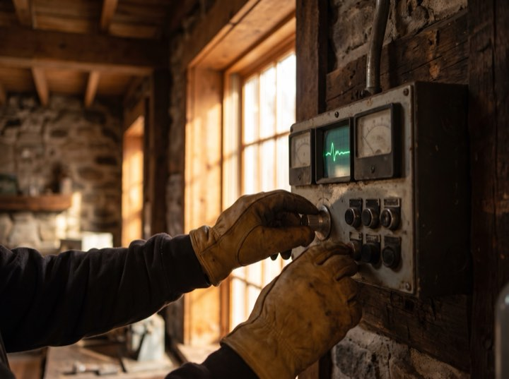
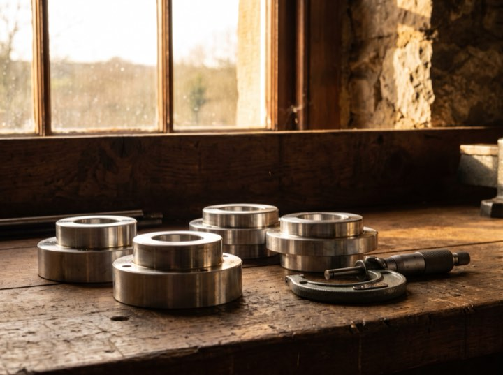
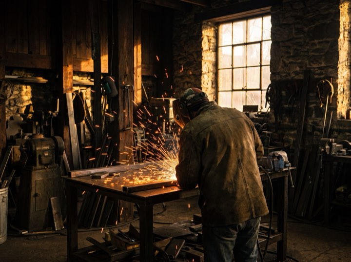

For candidates
Real salary bands, an honest description of the company, and we will tell you when a role isn't right for you even though it costs us a fee.
Manufacturing & industrial engineering
We place engineers and operations leaders in manufacturing and industrial businesses. Every advertised role carries its real band, not 'competitive', and applying takes under a minute from a phone.

Services
Most agency sites are written entirely for employers and then wonder why candidates don't return calls.
Real salary bands, an honest description of the company, and we will tell you when a role isn't right for you even though it costs us a fee.
For roles at pace. You pay on placement, 20% of first-year salary, with a 90-day replacement guarantee written into the terms.
For leadership and hard-to-fill technical roles. Mapped market, full confidentiality, and a shortlist of four rather than a stack of twelve.
What roles actually pay in your region right now, and why your last two offers were declined. Often free, always useful.
Results
Process
Same process whether you're hiring or looking. The difference is who pays.
Employers: the real requirement, not the job description. Candidates: what you'd actually move for, which is rarely just money.
We work one sector, so we largely know who's out there already. Mapping is confirmation rather than discovery.
Four candidates with a written assessment of each, including the reservations. A stack of twelve means we haven't done our job.
We manage the offer, the counter-offer and the resignation. We check in at 30, 60 and 90 days, which is when placements actually fail.
The role list
Every band published, every role on a floor like these. Tap the number and a person answers.



Either conversation is confidential and neither commits you to anything. Candidates: we'll tell you what you're worth right now even if you don't move.
20% contingent, 90-day replacement guarantee. Retained terms available for leadership roles.